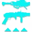

乘胜追击
击破战斗人员护盾：
+20 稳定性，
+20 操控性，
+20 填装速度，持续 10 秒。
刀剑获得 +20 防御抗性。
来自过去赛季的神器可装备，每件专注于特定元素、武器类型和独特机制。
击破战斗人员护盾：
+20 稳定性，
+20 操控性，
+20 填装速度，持续 10 秒。
刀剑获得 +20 防御抗性。
击杀电弧减益战斗人员：
获得 x1 电光充能。
在 6 秒内连续击杀 3 名电弧减益战斗人员：
生成一个能量球，提供 7.15% 超能能量，并恢复 40 点生命值。
使用电弧武器击杀 6 [2?] 名战斗人员：
生成一个电弧元素能量球。
电弧元素能量球：
落地后最多停留 20 秒，随后消失。
拾取后最多可持有 20 秒。
造成最多 405 [101] 点伤害，随距离最低衰减至 90%，并在 8 米范围内施加震颤。
造成动能武器伤害或完成动能武器击杀会推进计数器，达到 100% 时生成一个独特的动能弹药盒。
计数器持续 15 秒，每次造成动能武器伤害都会刷新。
每点伤害提供 0.0265% 进度，即需要造成 3770 点伤害才能生成一个弹药盒。
A499 提供的进度减少 75%，需要 15000 点伤害才能生成一个弹药盒。
红血 = 8% | 橙血 = 15% | 初级首领 = 25%
伤害需求忽略光等差距，但计入实际伤害系数——也就是说，无论光等差距把伤害压低多少，需要的“基础伤害”都一样。
收集一个动能弹药盒时：
获得 +5% 特殊弹药与 +5% 威能弹药进度。
填装当前装备的动能武器，并为它们生成特殊／威能弹药。
每次生成（弹匣容量的 1/3）+ 1 发弹药，个别武器例外。
计入弹药拾取效果。动能弹药生成不受回收器影响。
堡垒 = +1 弹药 | 库尔之影 = +2 弹药 | 英勇利刃 = +2 弹药 | 缩影 = +12 弹药。
击破一个战斗人员护盾时：
10% [2.5%] 伤害抗性（抵抗 x1），持续 6 秒。
近战伤害提高 100%，持续 6 秒。
超能近战伤害同样提高。
对 战斗人员造成足够次数的动能武器伤害时：
生成一个动能裂口，持续 ? 秒。
动能裂口可以被攻击，受到伤害 ? 秒后激活。
动能裂口的爆炸伤害等于它受到的伤害的 [?]%，可眩晕势不可挡勇士，并会击退战斗人员。
使用弓或狙击步枪造成精准命中时：
获得一层远距填装，持续 ? 秒，最多 3 层。
远距填装：每层提供 +? 填装速度。
每当勇士被眩晕时：
为充能最少的技能提供 25% 技能能量。
不包括超能技能。
狙击步枪命中时：
获得一层狙击手冥想，持续 7 秒。
威能狙击步枪命中获得 2 层。
狙击手冥想在收起武器后仍然保留。
狙击手冥想按层数提高伤害、稳定性与填装速度：
伤害：2.8% | 5.7% | 9% | 12% | 15%
稳定性：+? | +? | +? | +? | +?
填装速度：+15 | +30 | +35 | +40 | +45
在使用刀剑进行格挡后：
获得势不可挡射击，持续 3 秒。
这在所有情况下都不起任何作用哈哈哈哈哈哈哈哈哈哈。
攻击后等待 0.5 秒再次攻击：
获得银白利刃，持续 5 秒。
该效果无法刷新。
银白利刃：
刀剑伤害提高 15%，充能效率 +100。
连续 3 次轻攻击后再打出一次重攻击：
获得刀剑风暴连击，持续 5 秒。
额外的刀剑击杀会刷新该效果。
刀剑风暴连击：
自动对使用者周围 6 米内的战斗人员每 0.53 秒造成 103 [?] 点刀剑动能伤害并施加迷惑，持续 3 秒。
距离小于 4 米时，伤害最多提高 15%。
注解：只受银白利刃加成。
在 4 秒内连续击杀 3 名被虚弱的战斗人员：
获得吞食，持续 5 +2.5 秒。
本应造成虚弱的命中，即使当场击杀战斗人员也计入。
当拥有虚空元素增益（吞食、隐身或虚空覆盖护盾）时：
近战与刀剑命中造成虚弱，持续 6 秒。
在命中时检测，而非在使用时快照。
当拥有虚空元素增益时，用近战或刀剑击杀：
触发一次虚弱爆发，对 4 米内的战斗人员造成虚弱，持续 6 秒。
击杀一个被虚弱的战斗人员后：
生成一个追踪弹头，寻找 15 米内的战斗人员。
弹头造成 87 [?] 点虚空伤害，并在 ? 米范围内施加虚弱。
使用终结技：
获得 25% 手雷与近战技能能量。
击杀被震颤的战斗人员时：
对 8 米内的战斗人员施加致盲，持续 10 秒。
造成电弧近战伤害时：
施加震颤，并每 0.25 秒造成 23 点电弧持续伤害，8.75 秒内合计约 800 点电弧伤害。
此数值不含震颤伤害；计入震颤后总伤害为 1245 点。
在 3 秒内取得 3 次机枪击杀时：
恢复 15 点生命值，并开始生命回复。
精准击杀提供精准平等层数，最高 10 层。
= 1 | = 2 | = 5 | 勇士 + = 10
层数不会溢出，也不会超过 x10。
达到 x10 层数时：
消耗全部层数，生成一个大型能量球，该能量球提供 12.5% 超能能量。
拾取大型能量球时：
获得武器激涌 x2，持续 11 秒。
不会覆盖更强的武器激涌，对所有伤害类型均生效。
电弧粘性电浆手雷、融合手雷与磁性手雷的直接命中伤害提高。
电弧粘性电浆手雷 = 60% | 融合手雷 = 30% | 磁性手雷 = 总计提升 22.5%
其中只有第一次磁性手雷获得 45% 的加成。
不会提高融合手雷的烈日效果伤害。
用上述手雷击杀战斗人员时：
在战斗人员死亡位置上方生成 4 枚追踪动能微型导弹，追踪 30 米内最近的战斗人员。
微型导弹命中时造成 216 [?] 点动能伤害。
行为与辅助炸药的导弹完全相同。
在 3 秒内对同一目标造成多次精准命中时：
烈日武器：获得焕光，持续 10 +5 秒。
冰影武器：获得一层冰霜护甲。
触发后有 1.5 秒冷却，冷却期间的额外命中不计。
多次精准命中的次数要求：
（弹匣容量的 25%）+ 1，向下取整；弓为 3 次。
使用缚丝摧毁缠结时：
爆炸额外造成一次 288 [?] 点伤害，在 17 米半径内衰减至 75%。
额外伤害计为缠结伤害，在所有交互中均如此。
处于焕光状态时，造成相当于战斗人员生命值与护盾之和 10% 的武器伤害，或用武器击杀灼烧状态战斗人员：
目标释放 1 枚烈日弹片，造成 54 [?] 点伤害与最多 289 [20] 点爆炸伤害，并在 ? 米范围内施加 x20+0 灼烧。
弹片生成有 1 秒冷却时间。
弹片有轻微追踪，但经常会错过生成时瞄准的那个战斗人员。
向盟友施加元素增益时：
获得约 15% [?] 职业技能能量。
每个盟友触发后各有 ? 秒冷却时间。
对非首领战斗人员施加暗影减益时：
造成的烈日伤害提高 75%。
表现为烈日伤害跳出黄色数字。
与其他虚弱来源按层数叠加。
重复施加暗影减益以再次触发，需要 2? 秒冷却时间。
当冰霜护甲、虚空覆盖护盾或织造铠甲激活时：
近战充能速率额外提高 ?% [?%]。
充能近战伤害提高 50% [5%]。
超能近战伤害同样提高。
当增幅或焕光激活时：
手雷充能速率额外提高 ?% [?%]。
手雷伤害提高 25% [5%]。
抓钩近战改为提高 12% 伤害，Perk 的两半各提供一半。
冰霜护甲激活期间，护盾被战斗人员的伤害击破时：
在 10 米范围内释放冰影爆发。
冰影爆发冻结战斗人员，并为使用者与范围内的盟友各提供一层冰霜护甲。
用元素武器眩晕勇士时：
触发一次元素匹配爆炸，造成最多 315 点元素伤害，并在 5 米范围内施加对应的元素减益（伤害向外递减至 0%）。
电弧：震颤 | 烈日：点燃 | 虚空：不稳定
冰影：冻结 | 缚丝：割裂
对动能武器无效。
拾取元素拾取物时：
与拾取物类型匹配的武器伤害提高 22% [?%]，持续 7 秒。
显示为武器激涌，但与武器激涌是乘算。
对被瓦解的战斗人员造成相当于其生命值与护盾之和 10% [100? 生命值] 的武器伤害时：
生成一个线虫。
生成线虫有 0.5 秒冷却时间。
线虫造成伤害时施加割裂。
在 2 名盟友 15 米范围内持续造成精准伤害时：
获得 25% 伤害抗性（抵抗 x2），持续 10 ? 秒。
击杀受到缚丝减益的战斗人员时：
触发一次悬停爆破。
仅在生成缠结时触发。
拾取一个与超能元素匹配的元素拾取物时：
为充能最少的技能提供 25% 技能能量。
缠结也会触发。
两次触发之间有 0.3 秒冷却。
不会对已有至少 1 层充能的技能触发。
在棱镜分支职业上装备特技闪身时不生效。
击杀足够数量的战斗人员后：
生成一个与超能元素匹配的元素拾取物。
所需击杀数因元素拾取物而异：
焰灵、虚空裂口：4–7 次击杀。
离子轨迹、冰影碎片、缠结：9–11 次击杀。
会触发焰灵、虚空裂口与缠结的全局冷却。
冷却期间的击杀不计入下一个拾取物。
伤害类型与超能元素匹配时没有额外加成。
冰霜护甲激活期间，用冰影武器取得精准击杀：
在战斗人员死亡位置触发一次冰冻爆发，影响 7 米内的战斗人员。
造成线虫伤害时：
获得一层集群战术，持续 10 秒，最多叠加至 2 层。
再次造成线虫伤害会刷新持续时间。
集群战术 x1 | 线虫伤害提高 15%。
集群战术 x2 | 线虫伤害提高 30%。
处于集群战术 x2 期间，每次线虫命中再把线虫伤害提高 1.03 倍，直到增益到期。
线虫伤害会眩晕势不可挡勇士。
拾取弹药盒时：
获得动能武器激涌，持续 11 秒。
特殊弹药盒 = x2 动能武器激涌。
威能弹药盒 = x3 动能武器激涌。
不会覆盖更强的武器激涌。
在 3 秒内用刀剑取得 3 次击杀：
获得 +3 弹药。
英勇利刃与故我在改为获得 +1 弹药。
与描述相反，它不提供任何伤害抗性。
护甲充能低于 2 层，且在 3 秒内用弓、狙击步枪或斥候步枪造成多次精准命中时：
获得一层护甲充能。
多次精准命中的次数要求：
斥候步枪 = 5 | 弓 = 3 | 狙击步枪 = 2
在 3 秒内造成 2 次非同时的微型导弹伤害，或取得一次微型导弹击杀后：
目标释放一道动能冲击波，对 7 米范围内的战斗人员造成 120 [20] 点动能伤害，并眩晕势不可挡勇士。
冲击波无伤害衰减。
触发后进入 ? 秒冷却时间。
护甲充能激活时：
填装弓可获得 3 层弑神箭头。
收起武器会移除所有层数。
持有弑神箭头时开火：
消耗 1 层以提高伤害，并获得 +? 填装速度。
主武器 = 对战斗人员伤害提高 35%。
威能武器 = 对战斗人员伤害提高 25%。
层数与所有效果叠加。
15 米范围内有 3 名战斗人员，且装备偃月或机枪时：
偃月与机枪各获得 +? 稳定性与 +30 填装速度。
偃月的射弹、近战或机枪击杀可恢复 55 点生命值。
条件不再满足后，属性加成再持续 5 秒。
击杀回血效果不会延续。
缠结造成伤害时施加割裂，持续 10 +5 秒。
拾取缠结时：
缠结冷却时间减少 4 秒。
可由摩伊拉的线织尖刺击中缠结触发，也可由卢扎卡的丰饶之巢产出的缠结触发。
（线性）融合步枪命中时施加一个独特的可叠加虚弱，提高自身对该目标的伤害。
各层对应：5% | 10.25% | 15.8% | 21.6% | 27.6%。
30% 虚弱会覆盖粒子重建虚弱；神圣裁决的泡泡会把它压到 15%。
多次直接命中会补充 10% 的弹匣，向上取整。
融合步枪的弹匣中每一发弹药通常都算一次命中；攻击融合步枪（含库尔之影）例外，每两次点射才触发一次。
精密线性融合步枪：弹匣 + 2
适配点射线性融合步枪：3 x（弹匣 + 4）
以下武器的触发条件另计：
堡垒 = 每 7 次点射
悦耳之声 = 线虫算作命中，否则需要 30 次命中（8 次点射）
精致坟墓 = 每 3 次完整点射
冰霜巨人 = 8 次射击后
Vex 揭秘者 = 每 25 次命中
击杀电弧减益战斗人员：
获得 x1 电光充能。
在 6 秒内连续击杀 3 名电弧减益战斗人员：
生成一个能量球，提供 7.15% 超能能量，并恢复 40 点生命值。
在 5 秒内施加不稳定 4 次时：
接下来 10 秒内的下一次虚空伤害会释放一个虚弱爆发，影响 7 米内的战斗人员。
对尚未被虚弱的战斗人员施加虚弱时：
虚空覆盖护盾生命值 +25，持续 10 +5 秒。
每个虚弱来源只触发一次，例如烟雾弹不会重复触发。
用法夫纳或牵引器火炮时不会获得虚空覆盖护盾。
用与超能元素匹配的武器击杀疲惫或割裂状态的战斗人员时：
额外获得 2?% 超能技能能量。
在 3 秒内用虚空武器造成多次精准命中，或在 3 秒内取得 3 次击杀：
获得不稳定弹药，持续 10 [6] 秒。
多次精准命中的次数要求：
（弹匣容量的 25%）+ 1，向下取整；弓为 2 次。
触发不稳定爆炸可获得 10% 职业技能能量。
达到 x10 电光充能时：
获得增幅，持续 15 秒。
闪电过载对战斗人员的伤害提高 50%：
基础：405 伤害 + 270 溅射 = 675
闪电过载：608 伤害 + 406 溅射 = 1014
不会提高对守护者的伤害。
在 7 秒内造成 8 次机枪伤害或 2 次火箭发射器伤害时：
获得 25% [5%] 伤害抗性（抵抗 x2），持续 15.5 秒。
手雷与近战技能的基础充能速率额外提高 85%，持续 10 秒。
当威能军械激活时：
击杀橙血 + 战斗人员会使 10 米内的红血迷失方向。
拾取能量球或缠结时：
获得瓦解弹药，持续 14 [?] 秒。
对被瓦解的战斗人员造成相当于其生命值与护盾之和 10% [100? 生命值] 的武器伤害时：
生成一个线虫。
生成线虫有 0.5 秒冷却时间。
线虫造成伤害时施加割裂。
眩晕一名勇士时：
获得 x10 电光充能。
闪电过载的溅射伤害部分会施加震颤。
触发闪电过载时：
恢复约 55 点生命值，并开始生命回复。
但不会重新开始护盾充能。
用电弧击杀疲惫或割裂状态的战斗人员时：
触发一次致盲爆发，致盲 5 米内的战斗人员。
触发有 6 秒冷却时间。
在 3 秒内取得 2 次偃月近战击杀时：
为特殊弹药偃月补充 +2 备用弹药。
用偃月护盾格挡伤害时：
偃月近战伤害提高 85% [?%]，持续 6 秒。
友方射击该护盾也会触发。
用虚空武器击杀被虚弱的战斗人员时：
对 ? 米内的战斗人员施加不稳定。
对 [?] 战斗人员与 [?]，范围扩大至 ? 米。
用动能武器或与超能元素匹配的武器在 3 秒内取得 3 次击杀时：
生成一个与所装备超能元素匹配的元素拾取物。
拾取元素拾取物时：
获得 5% [1%] 对应元素的超能技能充能。
两次额外充能之间有 2 秒冷却时间。
对受到元素匹配减益的战斗人员造成 3 次追踪步枪命中时：
追踪步枪伤害提高，持续 4 秒。
传说追踪步枪 = 50%
异域特殊追踪步枪与北极星 = 35%
缩影对受到任意元素减益的战斗人员造成 4 次命中后，伤害提高 20%。
电弧 = ↓致盲 ↓震颤
烈日 = ↓灼烧 ↓点燃
虚空 = ↓压制 ↓不稳定 ↓虚弱
冰影 = ↓减速 ↓冻结 ↓碎裂
缚丝 = ↓割裂 ↓悬停 ↓瓦解
释放超能时处于低生命值，或拥有元素匹配增益：
超能技能伤害提高 15%。
一次性超能只获得 8 秒加成，持续型超能的加成持续到结束。
电弧 = ↑增幅 ↑电光充能
烈日 = ↑治愈 ↑焕光 ↑恢复
虚空 = ↑吞食 ↑隐身 ↑虚空覆盖护盾
冰影 = ↑冰霜护甲
缚丝 = ↑织造铠甲
2–3 秒内的每次非异域火箭发射器击杀都会推进计数器：
= 25% | = 34% | = 100%
计数器达到 100% 时：
火箭发射器获得 +1 弹药，精密框架火箭发射器（或任何带双脚架的框架）获得 +2 弹药。
同时获得 +? 填装速度与 0.?x 填装持续时间倍率，持续 10 秒。
不受回收器模组影响。
拾取 5–6 个特殊弹药盒时：
生成 8% 威能弹药，向上取整。
拾取计数器在死亡时重置；不受回收器模组影响；在熔炉竞技场中无效。
对割裂状态的战斗人员造成 6 次武器伤害时：
施加瓦解。
击杀割裂状态的战斗人员时：
在战斗人员死亡位置释放 3 个治疗脉冲，每 2 秒一次，各恢复 15 点生命值，并为使用者与 10 米内的盟友提供织造铠甲，持续 10 秒。
在 3 秒内对同一目标造成多次非同时的冰影武器伤害时：
获得一层冰霜护甲。
两次触发之间有 0.45 秒冷却，冷却期间的额外命中不计；收起武器时计数器重置。
触发冰霜护甲所需的命中次数：
弓：3 | 单发榴弹发射器、刀剑：2 | 其余为（弹匣的 35%，向下取整）+ 2
无需手持冰影武器，按当前武器的弹匣计算。
在 3 秒内对减速的战斗人员造成多次冰影武器伤害时：
在战斗人员上方生成一个冰影碎片。
所需命中次数为弓：3 | 单发榴弹发射器、刀剑：2 | 其余为（弹匣的 25%，向下取整）+ 2。
冰霜护甲激活期间，护盾被战斗人员的伤害击破时：
在 10 米范围内释放冰影爆发。
冰影爆发冻结战斗人员，并为使用者与范围内的盟友各提供一层冰霜护甲。
被冻结的战斗人员会对 4 米内尚未受冰影减益影响的战斗人员施加 x? 减速。
拾取冰影碎片会推进晶体转换器计数器。
造成冰影近战伤害或钻石长矛伤害时：
消耗晶体转换器计数器，按已拾取的碎片数量生成水晶——
拾取 8 | 12 | 15 个碎片，分别生成 1 | 2 | 3 个水晶。
使用职业技能时：
下一次冰影武器击杀会生成一个冰影碎片。
击碎冰影水晶时：
呈 * 形释放 5 枚追踪冰刺，每枚造成 46 点伤害，并施加 x? [x10] 减速，持续 ? 秒。
冰刺均匀散开，其中一枚会飞向最近的战斗人员。
在战斗人员身上击碎额外造成 12.5% [?%] 伤害；击碎水晶额外造成 25% [?%] 伤害。
拾取虚空裂口时：
10 秒内的下一次虚空伤害会释放一个虚弱爆发，对 5 米内的战斗人员施加虚弱。
终结一个橙血 + 战斗人员时：
恢复 100 点生命值，并开始生命回复。
获得 25% 伤害抗性（抵抗 x2），持续 11 秒。
终结一个战斗人员时：
触发一道波形，造成 180 点超能元素匹配伤害，最远波及 15 米。
波会朝终结技的方向推进，并追踪战斗人员。
装备电弧、虚空或冰影超能时，波会额外施加与超能元素匹配的减益：
电弧 = 致盲
虚空 = 虚弱
冰影 = 减速
对冰影减益战斗人员：
电弧与虚空技能伤害提高 5%?
在 4 秒内连续击杀 3 名被虚弱的战斗人员：
获得吞食，持续 5 +2.5 秒，并生成一个虚空裂口。
本应造成虚弱的命中，即使当场击杀战斗人员也计入。
用榴弹发射器对或勇士造成伤害，或击破战斗人员的护盾时：
施加虚弱，持续 20 秒，同时填装已收起的武器。
该减益无法由榴弹发射器自己刷新，但可以由任何其他来源重新施加；施加虚弱与填装各有 10 秒冷却时间。
冰影碎片额外提供 10% 职业技能能量。
虚空裂口额外提供 10?% 近战技能能量。
在 1? 秒内对受到电弧减益的战斗人员造成 2 次精准命中，或在 ? 秒内击杀 3 名受到电弧减益的战斗人员：
生成一个离子轨迹。
离子轨迹生成有 4 秒冷却时间。
拾取离子轨迹时：
获得一层护甲充能。
护甲充能激活期间，于 ? 秒内对尚未致盲的战斗人员造成 2 次电弧武器精准命中：
消耗 1 层护甲充能，触发致盲爆发，对 ? 米半径内的战斗人员施加致盲，持续 ? 秒。
在 3 秒内用威能榴弹发射器造成 3 次非同时伤害，或用主武器／特殊榴弹发射器造成单次非致命伤害：
在战斗人员脚下触发一次冲击波，造成 227x2 = 454 点动能伤害，并在 7 米范围内踉跄并眩晕势不可挡勇士。
来自主武器与特殊榴弹发射器的冲击波只造成 150x2 伤害。
冲击波无伤害衰减；两次结算之间有 1 秒冷却时间。
造成榴弹发射器伤害时：
获得一层快速冲击，持续 5 秒，最多叠加 5 层。
填装速度：+5 | +10 | +15? | +20? | +30
填装持续时间倍率：0.99x | 0.99x | 0.98x | 0.96x | 0.94x
注解：可以被除了激涌和武器属性之外的增益加成。
15? 米范围内有 3? 名战斗人员，且在 ? 秒内击杀 3 名战斗人员时：
获得一层护甲充能。
15? 米范围内有 3? 名战斗人员时：
获得 +? 操控性与 +? 充能效率。
首次击破战斗人员护盾或超能状态下的守护者护盾时：
生成一个能量球，提供 7.15% 超能能量。
对尚未触发过该效果的战斗人员使用终结技也会生成一个能量球。
拾取能量球、元素拾取物或摧毁缠结时：
恢复 40 点生命值。
对致盲战斗人员造成的电弧伤害提高 15% [7.5%]。
与所有效果叠加。
在 3 秒内用武器击杀 3 名战斗人员：
获得 +? 敏捷，持续 7 秒。
再次触发会刷新。
吞食激活时：
虚空武器击杀会推进计数器，达到 100% 时生成一个虚空裂口：
= 16.7% | = 34% | = 50% | = ?%
拾取虚空裂口时：
获得 +? 操控性与 +? 填装速度，持续 ? 秒，并装满霰弹枪与榴弹发射器的弹药。
拾取虚空裂口时：
10 秒内的下一次虚空武器伤害会开启一个虚空门户。
虚空门户：
向约 10 米内的战斗人员释放 8 枚追踪虚空球，每枚在约 3 米范围内造成最多 334 [?] 点溅射伤害。
每枚球受到 540 点伤害， 每枚受到 180 点伤害。
用动能武器或与超能元素匹配的武器在 3 秒内连续击杀 3 名战斗人员时：
生成一个与所装备超能元素匹配的元素拾取物。
与废墟石板上的同名模组不同，此处不提供超能能量。
每当勇士被眩晕时：
为充能最少的技能提供 25% 技能能量。
释放超能时：
15 米内超能元素与施法者不同的盟友获得 20% [10%] 伤害加成，持续 10 [5] 秒。
伤害加成不可刷新，也不与焕光一类的强化增益叠加。
获得 5%? 对战斗人员的伤害抗性。
用刀剑在 5 秒内连续击杀 3 名战斗人员时：
获得 +3 弹药。
英勇利刃与故我在改为获得 +2 弹药。
造成刀剑伤害时：
消耗一层护甲充能，获得银白利刃，持续 5 秒。
银白利刃：
刀剑伤害提高 15%，充能效率 +100。
与其他增益叠加；持续期间不会再消耗额外的护甲充能。
对冰影减益战斗人员取得冰影击杀时：
在 6 米范围内触发减速爆发。
减速爆发：
对战斗人员施加 x20 减速，持续 2? +? 秒。
为使用者与盟友提供 x? 冰霜护甲。
冰霜护甲部分实测无效。
装备虚空或棱镜分支职业时：
击杀被虚弱的战斗人员可获得 15 点生命值的覆盖护盾。
对被虚弱的战斗人员造成的虚空伤害提高。
虚弱强度随之变化，括号内为实际伤害增幅：
7.5% → 10%（伤害提升 2.3%）
15% → 25%（伤害提升 8.7%）
30% → 35%（伤害提升 3.8%）
35% → 40%（伤害提升 3.7%）
神圣裁决的虚弱效果不受影响。
击破战斗人员护盾：
+20 稳定性，
+20 操控性，
+20 填装速度，持续 10 秒。
刀剑获得 +20 防御抗性。
装备烈日或棱镜分支职业时：
能量球额外提供焕光。
当冰霜护甲、虚空覆盖护盾或织造铠甲激活时：
近战充能速率额外提高 ?% [?%]。
充能近战伤害提高 50% [5%]。
超能近战伤害同样提高。
当增幅或焕光激活时：
手雷充能速率额外提高 ?% [?%]。
手雷伤害提高 25% [5%]。
抓钩近战改为提高 12% 伤害，Perk 的两半各提供一半。
使用缚丝摧毁缠结时：
爆炸额外造成一次 288 [?] 点伤害，在 17 米半径内衰减至 75%。
额外伤害计为缠结伤害，在所有交互中均如此。
对勇士造成电弧技能伤害时：
对该勇士施加震颤。
超凡激活期间：
手雷与近战伤害提高 10%。
超凡结束后：
每次武器击杀返还 4.2% 的光能与暗影能量，最多累计至 50%（需要 12 次击杀）。
用烈日狙击步枪造成精准命中时：
施加 x30+15 灼烧。
不受武器框架与弹药类型影响。
点燃会额外造成一次伤害。
爆燃在 12 米半径内造成 171 [30] 点烈日伤害，并视为点燃效果，没有伤害衰减 [待确认]。
装备烧焦余烬时：
爆燃额外施加 x40+20 灼烧。
注解：不受任何加成。
狙击步枪直接命中时：
获得一层狙击手冥想，持续 7 秒。
威能狙击步枪命中提供 2 层。
狙击手冥想在收起武器后仍然保留。
狙击手冥想按层数提高伤害、稳定性与填装速度：
伤害：2.8% | 5.7% | 9% | 12% | 15%
稳定性：+? | +? | +? | +? | +?
填装速度：+15 | +30 | +35 | +40 | +45
在 1.5 秒内对同一名战斗人员造成 10 次自动步枪命中时：
获得 25% 伤害抗性（抵抗 x2），持续 6 秒。
该效果可刷新，收起武器后仍然保留。
支援型自动步枪可通过治疗受伤的盟友触发。
用自动步枪击杀战斗人员会推进计数器：
普通击杀提供 50% 进度；
15 米内有 3 名战斗人员时，或已有 5 层时，击杀提供 100% 进度。
计数器进度在收起武器后保留。
计数器进度达到 100% 时：
获得一层瞄准自动填装器，持续 15 秒，最多叠加至 5 层，可刷新。
瞄准自动填装器按层数生效：
填装弹匣：20% | 20% | 30% | 40% | 40%
自动步枪伤害提高：10% | 13% | 16% | 18% | 20%
与其他增益叠加；切换到非自动步枪武器时移除。
装备电弧或棱镜分支职业，且处于增幅状态时：
电弧击杀会触发一次闪电爆发，在 8 米半径内造成最多 126 [?] 点电弧伤害，并施加震颤。
两次触发之间有 5 秒冷却时间。
在 3 秒内对同一目标造成多次精准命中时：
烈日武器：获得焕光，持续 10 +5 秒。
冰影武器：获得一层冰霜护甲。
触发后有 1.5 秒冷却，冷却期间的额外命中不计。
多次精准命中的次数要求：
（弹匣容量的 25%）+ 1，向下取整；弓为 3 次。
拾取能量球或投掷缠结时：
获得瓦解弹药，持续 14 [?] 秒。
对被瓦解的战斗人员造成相当于其生命值与护盾之和 10% [100? 生命值] 的武器伤害时：
生成一个线虫。
生成线虫有 0.5 秒冷却时间。
线虫造成伤害时施加割裂。
处于焕光状态时：
对受缚丝或冰影减益影响的非首领战斗人员，武器伤害提高 5%。
缚丝减益：瓦解、割裂、悬停
冰影减益：减速或冻结。
击杀一个被冻结的战斗人员时：
生成 1 个冰影水晶，则生成 2 个。
水晶生成在战斗人员死亡位置附近。
击碎冰影水晶时：
呈 * 形释放 5 枚追踪冰刺，每枚造成 46 点伤害，并施加 x? [x10] 减速，持续 ? 秒。
冰刺均匀散开，其中一枚会飞向最近的战斗人员。
在战斗人员身上击碎额外造成 12.5% [?%] 伤害；击碎水晶额外造成 25% [?%] 伤害。
释放烈日超能时：
施法者与 15 米内的盟友获得焕光。
按盟友数量提供超能伤害加成，施法者本人也算一名盟友：
6% | ?% | ?% | ?% | ?% | 15?%
光焰之井的施法者只受益 5 秒。
眩晕一名勇士时：
该勇士被点燃。
处于焕光状态时：
烈日精准击杀战斗人员会触发点燃。
击破一个战斗人员护盾时：
10% [2.5%] 伤害抗性（抵抗 x1），持续 6 秒。
近战伤害提高 100%，持续 6 秒。
超能近战伤害同样提高。
火箭发射器对勇士的伤害提高 33%。
单人游玩时：
精准击杀叠加一层伤害增益，层数无上限（∞），死亡时全部失去。
每层提供 1.2% 对战斗人员的武器伤害加成，x25 层时即 30% 武器伤害加成。
该加成与所有效果叠加。
超能能量高于 60% 但尚未充满时：
技能击杀会生成 3 个能量球，每个提供 7.15% 超能能量。
生成能量球有 30 秒冷却时间。
只要超能能量高于 60%，就能与漫游超能配合使用。
每用缚丝或冰影武器击破第 3 个战斗人员护盾时：
缚丝施加悬停，冰影施加冻结。
发射火箭发射器时：
消耗 x1 护甲充能，获得弑神弹头，持续 4.5 秒。
弑神弹头：
伤害提高 15%，可叠加；
+? 填装速度，0.?x 填装持续时间倍率。
持续期间不会再消耗额外的护甲充能。
处于焕光状态时：
烈日武器对尚无灼烧层数的战斗人员施加 x30+15 灼烧。
由火种扳机首次触发的灼烧不受武器或技能伤害加成影响；在光焰之井内无效。
对冰影减益战斗人员取得冰影击杀时：
在 6 米范围内触发一次减速爆发。
减速爆发：
对战斗人员施加 x20 减速，持续 2? +? 秒。
为使用者与盟友提供 x? 冰霜护甲。
冰霜护甲部分实测无效。
冰霜护甲激活期间，用冰影武器取得精准击杀：
在战斗人员死亡位置触发一次冰冻爆发，影响 7 米内的战斗人员。

在 ? 秒内用榴弹发射器或火箭发射器取得 2 次击杀时：
获得一层护甲充能。
2–3? 秒内的每次非异域火箭发射器击杀都会推进计数器：
= 25% | = 34% | = 100%
计数器达到 100% 时：
火箭发射器获得 +1 弹药，精密框架火箭发射器（或任何带双脚架的框架）获得 +2 弹药。
同时获得 +? 填装速度与 0.?x 填装持续时间倍率，持续 10 秒。
不受回收器模组影响。
对割裂状态的战斗人员造成 6 次武器伤害时：
施加瓦解。
击杀割裂状态的战斗人员时：
在战斗人员死亡位置释放 3 个治疗脉冲，每 2 秒一次，各恢复 15 点生命值，并为使用者与 10 米内的盟友提供织造铠甲，持续 10 秒。
瓦解织线额外造成 15% 伤害。
装备缚丝或棱镜分支职业，并获得织造铠甲时：
获得瓦解弹药，持续 8 秒。
对受缚丝减益影响的战斗人员：
电弧与虚空技能伤害提高 5%。
拾取能量球或虚空裂口时：
获得不稳定弹药，持续 9 [?] 秒。
用偃月对战斗人员造成伤害时：
施加压制，持续 10 秒。
偃月近战会消耗 10% 偃月能量来施加压制；战斗人员已被压制时不消耗能量。
装备电弧或棱镜分支职业，且处于增幅状态时：
电弧击杀会触发一次闪电爆发，在 8 米半径内造成最多 126 [?] 点电弧伤害，并施加震颤。
两次触发之间有 5 秒冷却时间。
装备虚空或棱镜分支职业时，击杀虚空减益战斗人员：
生成一个虚空裂口。
拾取虚空裂口时：
虚空覆盖护盾 +45，持续 10 +5 秒。
拾取虚空裂口时：
10 秒内的下一次虚空伤害会释放一次虚弱爆发，对 5 米内的战斗人员施加虚弱，持续 8 秒。
装备电弧或棱镜分支职业时：
增幅的持续时间延长至 20 秒。
眩晕一名勇士时：
获得一层护甲充能。
在超能元素匹配增益的影响下使用终结技时：
? 米范围内的盟友获得对应分支职业的增益：
电弧：增幅 | 虚空：吞食 | 缚丝：织造铠甲
处于重伤或增幅状态时：
电弧超能伤害提高 30%。
只影响超能动画期间造成的伤害，因此雷霆冲击与风起云涌实际吃到的加成偏低。
每取得 3? 次对橙血 + 战斗人员的虚空武器击杀：
为使用者与 ? 米范围内的盟友提供 50?% 威能弹药进度。
使用电弧手雷技能时：
5 秒内手雷基础充能速率额外提高 130%。
电弧击杀会为该效果延长 +3? 秒，最多累计至 20 秒。
在 1.5 秒内对同一名战斗人员造成 10 次自动步枪命中时：
获得 25% 伤害抗性（抵抗 x2），持续 6 秒。
该效果可刷新，收起武器后仍然保留。
支援型自动步枪也可通过治疗盟友触发。
虚空手雷技能伤害会施加干扰。
装备偃月时：
对 ? 米范围内的战斗人员获得 50% 伤害抗性。
首次击破战斗人员护盾时：
生成一个能量球，提供 7.15% 超能能量。
对尚未触发过该效果的战斗人员使用终结技也会生成一个能量球。
每个战斗人员只生效一次。
用自动步枪击杀战斗人员会推进计数器：
普通击杀提供 50% 进度；
15 米内有 3 名战斗人员时，或已有 5 层时，击杀提供 100% 进度。
计数器进度在收起武器后保留。
计数器进度达到 100% 时：
获得一层瞄准自动填装器，持续 15 秒，最多叠加至 5 层，可刷新。
瞄准自动填装器按层数生效：
填装弹匣：20% | 20% | 30% | 40% | 40%
自动步枪伤害提高：10% | 13% | 16% | 18% | 20%
与其他增益叠加；切换到非自动步枪武器时移除。
持有至少 1 层虚空技能充能时，用虚空武器取得击杀：
按虚空手雷、近战与超能技能的充能层数，获得等量的武器激涌，持续 11 秒。
拥有 4 层虚空技能充能时最多获得 x4 武器激涌，例如 2 手雷 + 2 近战 = x4 激涌。
只有当前层数不超过虚空技能充能数量时才能刷新；在棱镜上表现正常。